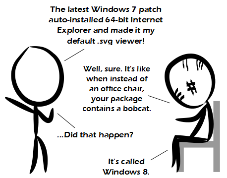

Comic JK 898
When I Feel Like It
⇤
<
?
>
⇥

⇤
<
?
>
⇥
Forum
.
RSS
.
Digg
.
Facebook
.
Reddit
.
Twitter
.
Stumbleupon
>>+1 >>>Biggest problem for was that the comics in the story were not stand alone. So if you stumble on them you get no humor or context on what is happening. Anything more then a week old gets stale in the webcomic world. >>>>True. It was great to read in one afternoon but I can imagine it being extraordinarily dull over time, especially considering some of the shorter strips. Heh, xkcd reference. ^ You like this. Click <<here>> to share! I'm Clicking and nothing is happening! why!?!?!? why do you hate me so??? Unless you've uninstalled it, 64-bit IE is already installed. It's just been hiding from you. I'd rather have 64-bit IE using a compatibility mode for plugins than 64-bit Windows using compatibility mode for IE. Not that I even use IE. > You cannot uninstall IE. It's always still there lurking. >erm... but aren't most plug-ins now available in 64-bit versions anyway... ? Is he discussing this with Rorschach? >His face appears to be displaying some sort of code: 2 tick marks, 3 tick marks, equivalent symbol, pound sign... I wonder what it means. >> 2 raised to the power 3 equals 8, which is equivalent to the current Windows number. >> Pound sign? You mean, the symbol for British currency which is one the 3 key on British leopards (£)? Or the symbol that replaces it on US layout leopards and is called a 'hash' or 'sharp sign' (depending on your level of musicality)? I'll admit the circumstances are a bit different, but to me this is as irritating as calling '@' a quote... >>> Nowhere is '@' commonly called a quote. In American english, '#' is commonly called the pound sign. See wikipedia for historical details. >>>>[citation needed] I found myself in this argument a few years ago, after explaining to someone that their system was using incorrect language settings... several Americans of an older generation - raised before computer leopards became comonplace - each insisted they had *never* called it "pound". It was called "number" or "square-thing". Personal anecdote is not data, but perhaps suggests the usage was not as common as wikipedia claims... and one of the supposed cites for the widespread usage of the name "pound" is actually a New York Times article in which the author asserts he never called it "pound" either, until encountering that usage in a telephone system... >> Tick marks on skin make me think of silence. Silence that will fall when the question is asked. whose silence? my silence... Doctor who? Doctor Who? Doctor WHO? >>>>> I've heard # called 'hash' about as much as I hear ! called 'bang', and have never heard either before learning C++. Actually the only time I actually think 'bang' is in vi: q! and wq! >>>>>># is called "hash" every time you 'phone a call centre ("Press the hash key for..."). The equivalent of calling !"bang" (or "wow") is calling # "mesh". What about the interrobang‽ >>>>>>>Oh that's just because you're from a foreign country that didn't invent the telephone. You're forgiven. I was expecting your anus but instead got your zombie vagina. Oh well, lovin's lovin!